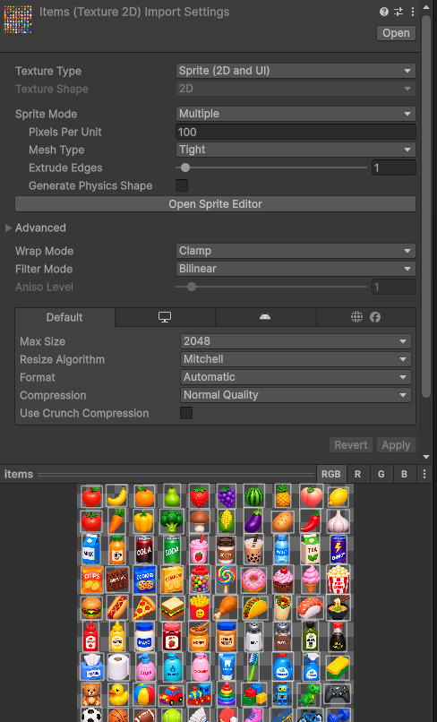
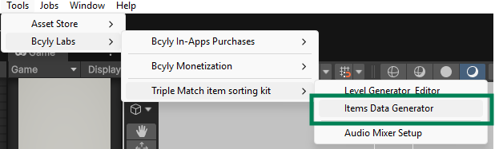
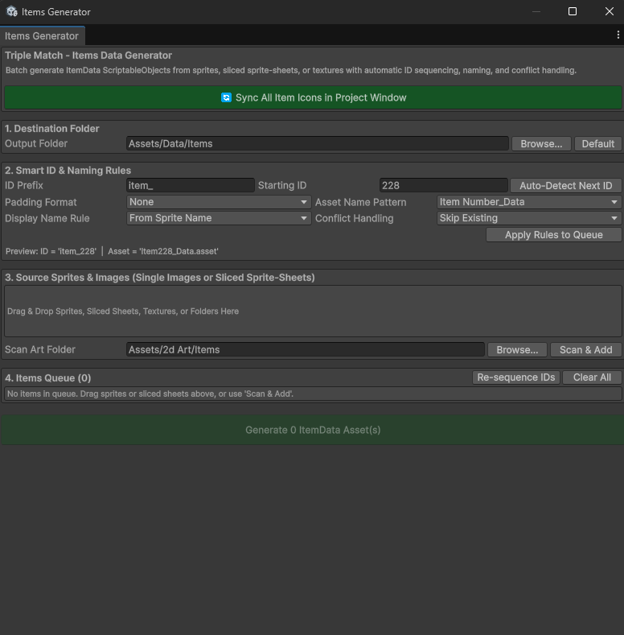
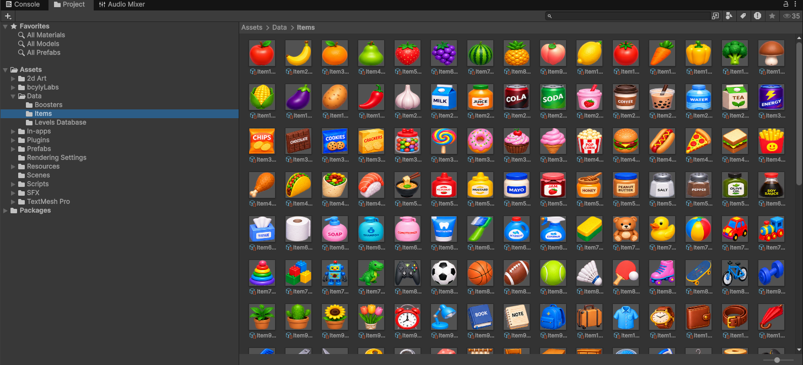
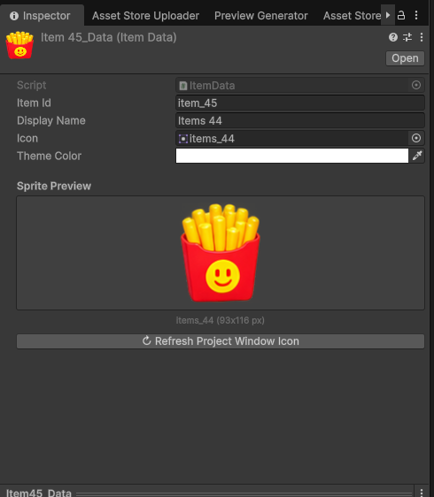

4. Add & Edit Items
Import item sprites, batch generate ItemData ScriptableObjects with the Items Data Generator, and assign items to pools.
An item needs two things: a sprite and an Item Data asset. The sprite gives it a picture. Item Data gives it an identity that the matching system can use.
4.1 Prepare the artwork
-
01
Step 1
Import your image into the project, for example into
Assets/2dArt/Items.
-
01
Select the image in the Project window
-
01
Step 1
Set Texture Type to Sprite (2D and UI).
-
01
Step 1
For one image, use Sprite Mode: Single.
-
01
Step 1
For a sheet with many items, use Multiple, open the Sprite Editor, and slice it.
-
01
Press Apply
Use transparent backgrounds and similar visible sizes for a consistent set of items. Keep Pixels Per Unit consistent with the existing artwork.

4.2 Open the Items Data Generator
Open Tools > Bcyly Labs > Triple Match item sorting kit > Items Data Generator.


4.3 Generator options
| Option | What it does |
|---|---|
| Sync All Item Icons in Project Window | Refreshes the small preview icons on Item Data assets. |
| Output Folder | Where new Item Data assets are saved. Use Assets/Data/Items for the normal workflow. |
| Browse | Selects a folder. |
| Default | Returns the output path to Assets/Data/Items. |
| Create Folder | Creates the output folder when it does not exist. |
| ID Prefix | The first part of each ID, such as item_. |
| Starting ID | The first number to use for the new items. |
| Auto-Detect Next ID | Finds the next available number based on the existing assets. |
| Padding Format | Chooses numbers like 1, 01, or 001. |
| Asset Name Pattern | Chooses how the saved file is named. Examples include Item1_Data, item_1_Data, a sprite name, a display name, or just the item ID. |
| Display Name Rule | Uses the sprite name or a numbered name such as Item 1. |
| Conflict Handling | Chooses what happens when a generated item conflicts with an existing asset or ID. |
| Apply Rules to Queue | Updates the queued names and IDs using your current rules. |
| Drag & Drop area | Accepts sprites, textures, sliced sheets, and project folders. |
| Scan Art Folder / Scan & Add | Finds images in a folder and adds them to the queue. |
| Convert to Sprites | Appears when queued textures need to be imported as sprites. |
| Re-sequence IDs | Rebuilds the queue's numbering. |
| Clear All | Clears the pending queue. It does not delete the existing item assets. |
| Queue row fields | Let you adjust the asset filename, item ID, and display name before generation. |
| X on a queue row | Removes that entry from the queue. |
| Generate ItemData Asset(s) | Creates the queued item definitions. |
Conflict choices: Skip Existing leaves the conflicting item unchanged. Overwrite replaces existing data. Auto Increment looks for another number. For a first attempt, use Skip Existing and check the queue messages.
4.4 Create new items
-
01
Set Output Folder to
Assets/Data/Items
-
01
Click Auto-Detect Next ID
-
01
Step 1
Drag the new sprites into the source area.
-
01
Check every queue entry
Make sure the IDs are unique.
-
01
Click Generate
-
01
Step 1
Open the output folder and select a new asset.

4.5 Edit an existing item
Select an Item Data asset in Assets/Data/Items.

| Field | What it does |
|---|---|
| Item Id | Identifies the item type for matching. Keep this unique. |
| Display Name | A readable name for the item. |
| Icon | The sprite used by the item. Replace this to change its artwork. |
| Theme Color | Stores the item's theme color. Where it appears depends on the feature using the asset; it does not replace the sprite. |
| Sprite Preview | Shows the assigned image. |
| Refresh Project Window Icon | Refreshes this asset's small icon. |
4.6 Make the item available in a level
Open the Level Editor and refresh the Item Palette. The tool discovers Item Data under Assets/Data.
- In Manual mode, select the new item and paint it into slots.
- In Auto Distribute mode, make sure the level's item pool includes it. A saved level can keep its own pool, so
creating an asset alone does not guarantee that every old level will use it.
- If Range is selected, check that the new item is inside the selected index range.
Save the level and playtest it. See Create your first level.